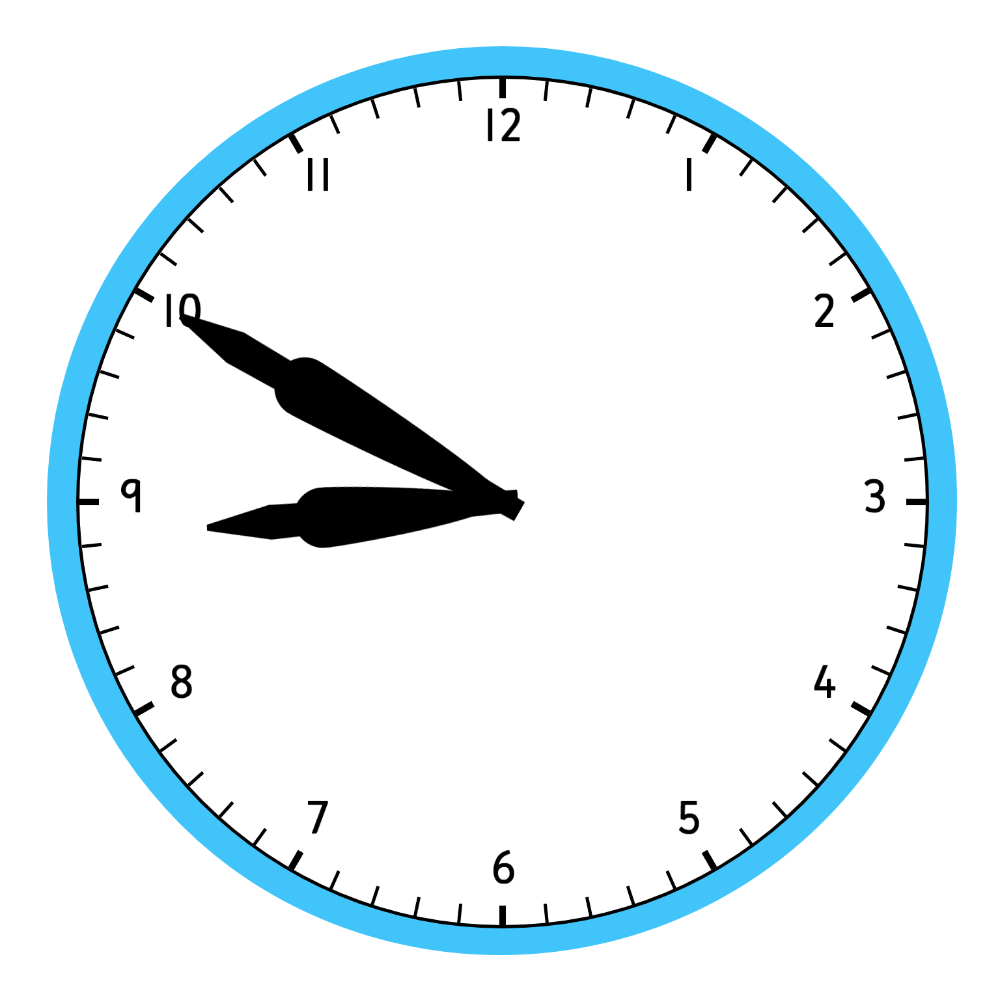

|  |
My time at Egan is coming to an end. We are currently at 8:50. The time of graduation and summer. Once the clock will hit 9 o'clock, high school will start. New adventures will be waiting for me right around the corner at Pinewood. Of course, I will miss Egan very much. I have enjoyed my time here and are a little sad to leave. Of course, I do not have any pictures of this time point. We are not there yet. But, we wil be in a very short time. Once we are there, I will take pictures and put them on this website so this page looks better :). |